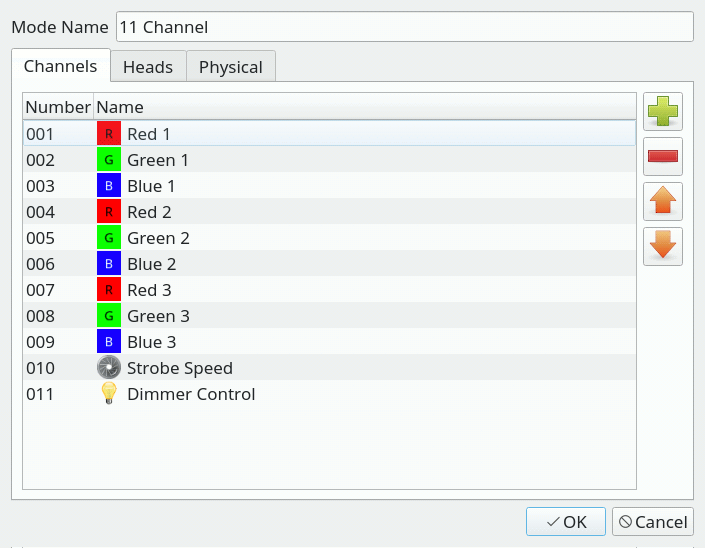
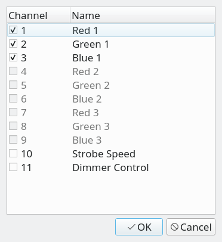

- 左のリストはフィクスチャーエディターのチャンネルタブで作った全てのチャンネルが表示されています。 ここから編集中のモードに割り当てたいチャンネル(機能)を選択していきます。
-
右のリストは編集中のモードに割り当てられているチャンネルが表示されます、
モードを新規作成している場合には最初は何も表示されていません、
ここに右のリストからチャンネル(機能)をdmxのチャンネル順になるように並べていきます。
編集が終わったらOKボタンを押してください。


モードエディタはフィクスチャーが使用するch数を変更できる機能(モード)を有しているときに、QLC+で対応するための機能です。 エディターはチャンネル・ヘッド・機種情報の３つのタブで構成されています。
チャンネルタブではフィクスチャーに割り当てられている全ての機能を追加してください、ここではモードのことを意識する必要はありません。 次のステップでここで追加した機能をモードに割り当てていきます。
| モード名 | モード名を設定してください。(重複した名前を付けることはできません) |
| チャンネル | モードに追加されたチャンネルをdmx順に表示します |
|
モードに割り当てるチャンネルを追加/編集できます。ここで追加するチャンネルは事前に
フィクスチャーエディターのチャンネルタブで作成しておく必要があります。
ボタンをクリックすると左右に一覧が表示されます。
編集が終わったらOKボタンを押してください。 |
|
選択したチャンネルを削除します |
|
選択したチャンネルを上に移動します |
|
選択したチャンネルを下に移動します |
ヘッドタブでは、１台のフィクスチャー内に複数のヘッド(発光部)が存在する場合に QLC+上で独立したフィクスチャーのように扱うことで操作しやすくしたり、まとめてフィクスチャーグループのように操作することもできます。
ヘッドはいわばサブフィクスチャーとも呼べる扱いを受けます、実際にヘッドを定義するときには端から名前に番号を振っておくといいでしょう。 ここで後先考えずに名前を決めてしまうと困るのは未来の自分です。

| Head list | 定義済みのヘッドが表示されています |
|
ヘッドをヘッドエディタを使って追加します |
|
選択したヘッドを削除します |
 |
選択したヘッドをヘッドエディタで編集します/TD> |
|
選択したヘッドを上に移動します |
|
選択したヘッドを下に移動します |
ヘッドエディタではフィクスチャー定義にヘッドを追加・編集できます。 ここで追加するチャンネルはチャンネルタブで事前に作成しておく必要があります。
編集方法は簡単で、編集中のヘッドに割り当てたいチャンネルの左のチェックボックスにチェックを入れるだけです。 ここで気をつけたいのは、１つのチャンネルは１つのモードにしか割り当てられないということです。例えばフィクスチャー内に ４つのヘッドがあり、それぞれRGBと光量の4chの計12chあれば問題ありませんが。ヘッドごとにはRGBの3chしかなく、フィクスチャー全体の光量を 1chで制御する計10chのフィクスチャーの場合は光量のチャンネルをヘッドに割り当ててはいけないことに注意してください。
|  |
|
このタブはフィクスチャーエディタ上にあるグローバル機種情報
タブとほぼ同じです。
ここではモードを切り替えることによってムービングヘッドの動作角など機種情報の項目が変化する場合のみ編集する必要があります、変化しない場合は
グローバル設定を使用するにチェックが入っていればOKです。設定を変更する場合はモード別設定を使用するにチェックを入れておきましょう